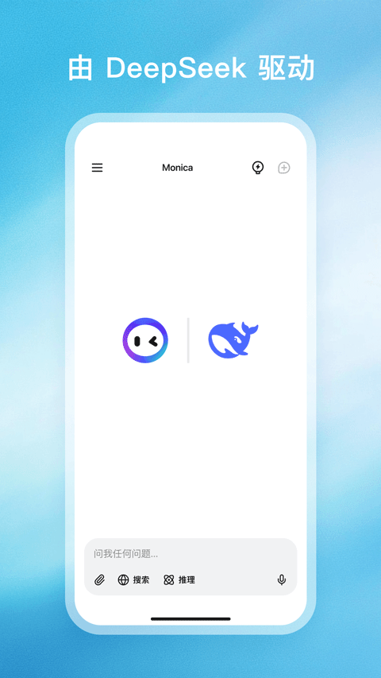

Monica 踩坑实录：四个装完就想卸的问题，以及怎么救
Monica 看着像个省心的 AI 助手，实际装完第一天就能撞上安装拦、额度秒没、记忆乱记、推理卡死这几个坑。每一个我都踩过，整理成症状、原因和解法。
Monica 这个东西，我最早是从它的monica官网上看到的，说实话刚装上的时候我以为就是个换皮的聊天框——界面干净，DeepSeek 免费对话，推理模式还能看 AI 思考过程，感觉就是个比普通助手多几个花哨按钮的玩意儿。结果第一天我就踩了四个坑，每一个都差点让我直接卸载重装。现在回头看，这些坑本质上都是「产品默认假设」和「用户预期」之间的落差，不是 bug，但你不提前知道就会浪费半小时到几小时。
第一个坑：安装包下好了，安卓说「解析包时出现问题」
症状：从官方下载拿到安装包之后，点安装，系统弹窗直接红字——「解析包时出现问题」，连安装界面都进不去。我第一次遇到的时候以为是下载中断了，删了重下，还是同一个错误。换浏览器下，还是不行。
原因：后来去 monica文档 翻了一下才弄明白，这个 APK 对安卓版本有最低要求。Monica 国内渠道的安卓版是给 Android 8.0 及以上做的——注意，是 8.0，不是 7.0。我手上那台备用机是 Android 7.1.2，系统版本差了一点点，但 Android 的包解析器就是不认，直接报解析失败。另外还有一种情况是下载的时候文件被 CDN 缓存了不完整的片段，校验哈希也能查出来。
解法：先查系统版本——设置里拉到底找「关于手机」，看 Android 版本号。低于 8.0 的设备，这条路走不通，要么换手机要么用网页版。另外装之前对比一下文件大小和文档站标注的是否一致，差太多就是下载残了，删掉重下就行。我那台 7.1.2 的备用机至今没装上，认了。
第二个坑：免费额度看着够，开了推理模式十分钟就见底
症状：注册的时候文案写的是「每日免费对话」，我粗略看了一下额度数字，感觉日常用肯定够。结果第一天晚上我开着推理模式问了几个稍微复杂点的问题——比如让它算一道带步骤的数学题，再让它深度分析一篇文章——十分钟不到，额度就亮红灯了。
原因：免费额度的计算不是按「对话轮次」，是按「token 消耗」。DeepSeek V3 日常对话 token 效率还行，但一开推理模式（R1），AI 会先生成一大段思考过程再给最终答案，token 消耗直接翻 3 到 5 倍。文档站里有个免费版每日额度的说明，我之前没仔细看——那个数字是按普通对话估的，推理模式下实际可用轮次可能只有普通模式的三分之一甚至更少。另外 AI 搜索（带来源的那种）因为要联网检索，消耗也比纯对话高。
解法：推理模式别当默认开。默认用普通对话，只有碰到确实需要分步思考的问题再切推理——切之前心里要有数，这一问可能顶三问的额度。AI 搜索同理，能纯对话解决的就别搜。另外每天零点额度会重置，实在不够用就等第二天，别为了一天的额度冲动开会员。

第三个坑：记忆功能在跨对话存东西，但你不知道它存了啥
症状：有次我在一个对话里提了一嘴我叫老杨，过了三天换了个全新的对话开始，Monica 上来就说「老杨你好」——我当时就愣了，这不是新对话吗？它怎么知道？
原因：Monica 有个默认开启的「记忆功能」，跨对话把你在任何会话里提过的信息存进个人档案，下次新对话会自动调取。产品逻辑上这是个加分项——不用每次重新自我介绍。但文档站里有个记忆与隐私的 FAQ，我第一次看完才发现：记忆是默认开的，而且存了之后你不一定意识得到它在调取。如果你在某个对话里提过敏感信息，这些信息可能会在后续对话里被自动引用，而你自己忘了当时说过。
解法：两个选择。要么去设置里关掉记忆功能，彻底干净；要么养成习惯，定期到「记忆管理」里看一眼它存了什么，不需要的手动清除。我选了后者——毕竟跨对话记住名字和偏好还是挺实用的，但得知道它记了啥才能放心。
第四个坑：推理模式开了之后，答得太慢以为卡死了
症状：开了推理模式问问题，AI 开始输出思考过程，一行一行往外蹦，蹦了三分钟还没到最终答案。我以为应用崩了或者网络断了，点了重试，结果把刚才的思考过程全丢了，重新开始。
原因：R1 的推理机制就是先思考再回答。思考过程的输出是逐字流式的，而且 R1 本身的推理链可能很长——复杂问题的思考过程能有几百甚至上千字。文档站里有个深度思考实战的案例，分步计算一道数学题的思考过程就有好几百 token，加上最终答案，整个输出时间比普通对话慢 2 到 3 倍。这不是卡，是它确实在想。
解法：开推理模式之前，心里先给自己打个预防针——这一问可能要等三分钟以上，别中途打断。应用不会因为思考时间长就卡死，网络正常的话它会持续输出。实在不想等，就等思考过程输出完、最终答案开始生成的时候再切回普通模式（不过切了之后思考过程也丢了）。我的做法是复杂问题扔给它之后就去喝口水，回来正好看到答案。

防坑清单
用 Monica 这大半个月，总结下来其实就这几条值得一开始就记住：
- 装之前先查安卓版本——低于 8.0 的别浪费流量
- 推理模式别默认开，token 消耗翻三到五倍
- 记忆功能默认开了，定期去看它存了什么
- 推理输出慢不是卡死，等三分钟再说
- 免费额度按 token 算，不是按轮次，推理和 AI 搜索消耗更高
知道这些坑之后，这软件其实相当省心。现在我默认用普通对话，偶尔切推理，记忆管理每周扫一次，额度也不再见底，该用的功能一个没少，该避的坑一个没踩。
这套中文文档的维护资料在GitHub、Gitee 和 GitCode 三个仓库都能拿到，找得到哪条算哪条，内容是同步的。